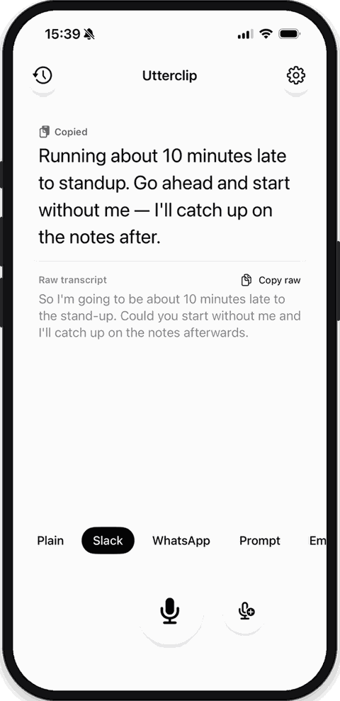
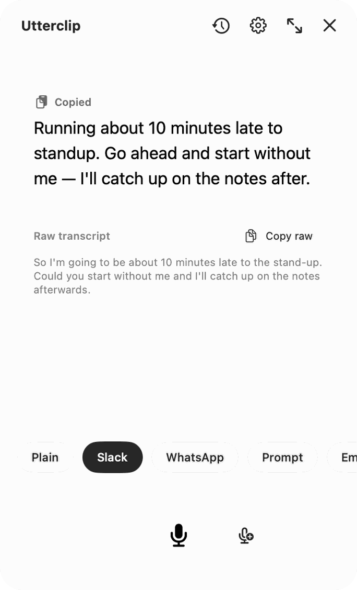
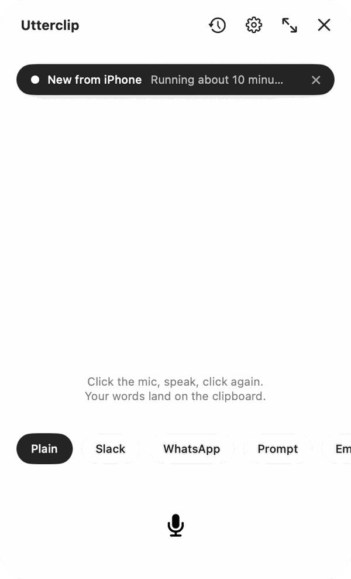

Utterclip transcribes what you say on the device itself, rewrites it as the message you were about to type — to a colleague or to an assistant — and leaves it on your clipboard. Switch app, paste, carry on.


Typing on a phone is slow. Talking is not — but speech has filler, no punctuation, and the shape of speech rather than the shape of a message.
So I'm going to be about 10 minutes late to the stand-up. Could you start without me and I'll catch up on the notes afterwards.
Running about 10 minutes late to standup. Go ahead and start without me — I'll catch up on the notes after.
Tap the mic and talk. Stop talking and it notices — five seconds of silence ends the recording on its own. Said half of it? Continue picks up where you stopped, and the rewrite re-runs on the whole thing.
The audio is transcribed on the phone by Whisper, then deleted. It never reaches a server — not ours, not anyone's.
Pick the shape it should take. It rewrites and copies — change your mind, tap another, paste again. It never answers you. A question in your transcript comes back as a question, not as a reply to it.
The standup you are late for, dictated from the train.
The brief for an assistant, spoken in one go and structured for you.
The reply you would rather not thumb out while walking.
The note you were putting off until you got back to a desk.
Okay so I want to build a small thing that takes our changelog and turns it into a release note, um, it should keep the tone we use in the app and it shouldn't invent features that aren't there, and I need it by Friday.
Want to build something small that turns our changelog into a release note — keeping the tone we use in the app, and not inventing features that aren't in it. Needs to be ready by Friday.
Turn our changelog into a release note.
So release notes read the way the app does, without writing them by hand each time.
Keep the app's existing tone. Do not invent features that are not in the changelog.
Ready by Friday.
Tap the mic, speak, tap again. Or give the Action button to Utterclip and skip the app icon entirely — it opens recording.
It lives in the menu bar, in one small window that floats over whatever you are writing in. A global shortcut opens it beside the field you are typing in and starts recording.
Dictate on the phone and the Mac window shows a small capsule saying so, live. When the text has synced it reads New from iPhone with the first words of it.
Click the capsule and the dictation lands in the Mac window and on the Mac clipboard — the fallback for the days Universal Clipboard does not feel like it.
A dictation started with the shortcut waits under the record button — Paste into Claude — and Return sends it into the field you came from. It waits rather than pasting on its own, so a bad transcript can be fixed first.

History, your rewrite styles, your settings and your API key travel between devices inside your own iCloud account, encrypted by Apple. One switch turns it off and everything stays where it was made.
Audio is recorded to a temporary file, transcribed on the device, and deleted straight after. It is never uploaded anywhere.
There is no account, no analytics, no tracking, and no server of ours. The app attaches no identifier of its own to any request.
Rewriting runs on Apple Intelligence on the device, or through an AI provider with a key you supply — in which case only the transcript text and the style instruction go, with emails, phone numbers, links and addresses swapped for placeholders first.
The whole thing is open source under MIT. You can read exactly what it does, and build it yourself.